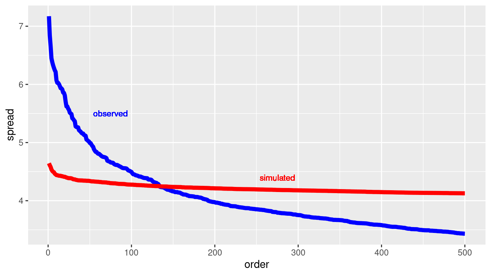
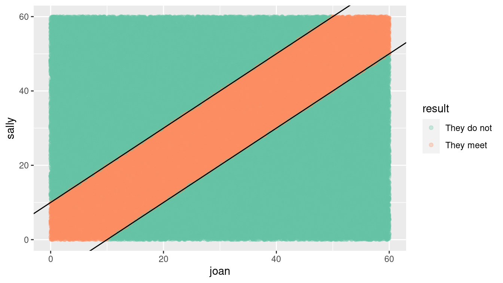
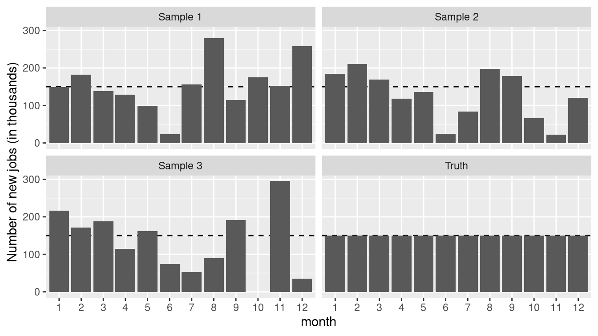
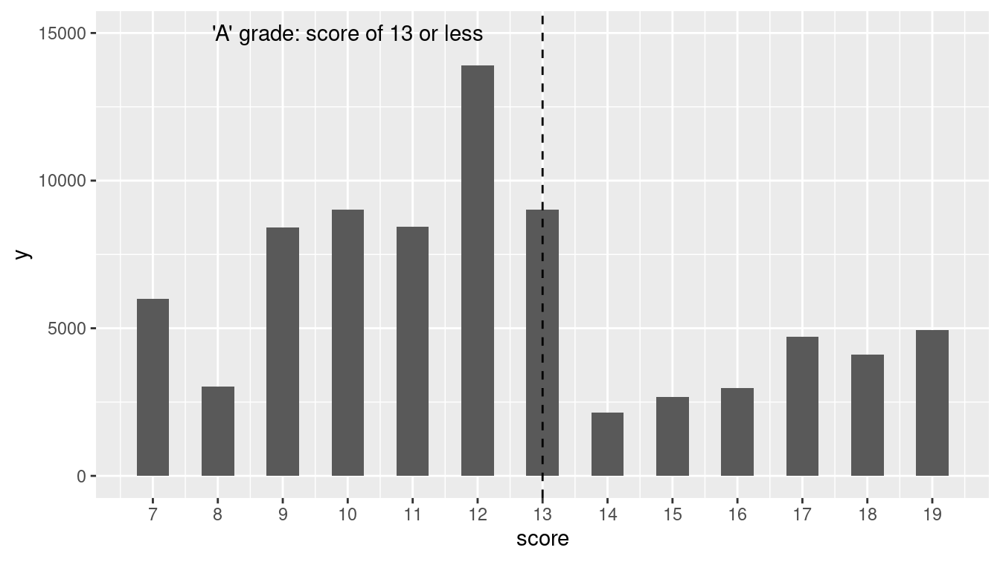
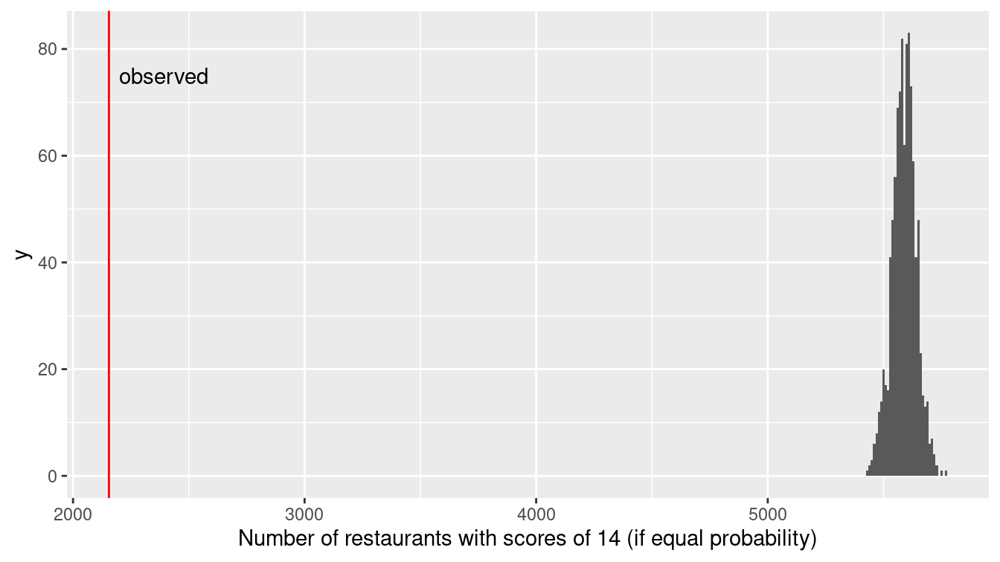
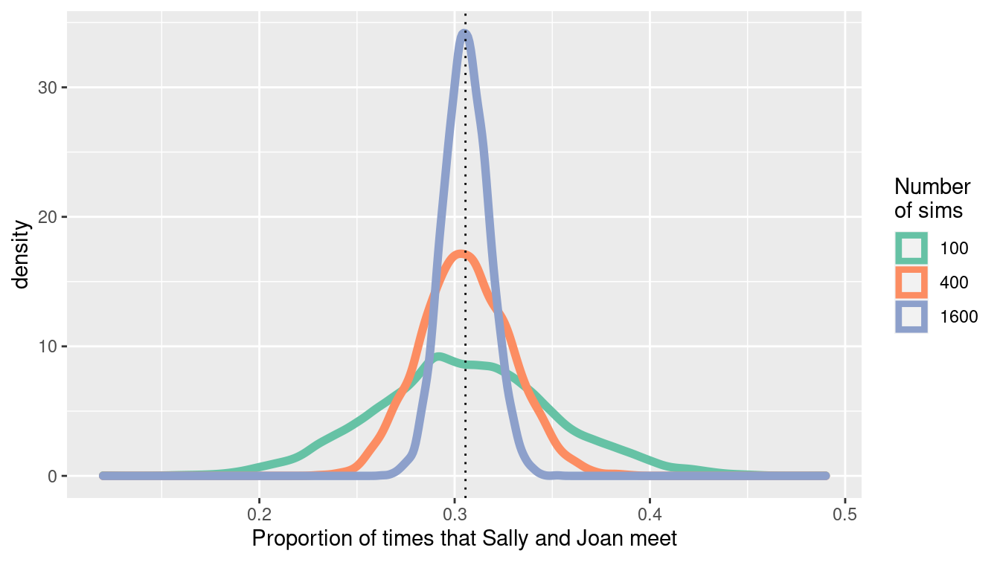

Chapter 13 Simulation
13.1 Reasoning in reverse
In Chapter 1 of this book we stated a simple truth: The purpose of data science is to turn data into usable information. Another way to think of this is that we use data to improve our understanding of the systems we live and work with: Data \(\rightarrow\) Understanding.
This chapter is about computing techniques relating to the reverse way of thinking: Speculation \(\rightarrow\) Data. In other words, this chapter is about “making up data.”
Many people associate “making up data” with deception. Certainly, data can be made up for exactly that purpose. Our purpose is different. We are interested in legitimate purposes for making up data, purposes that support the proper use of data science in transforming data into understanding.
How can made-up data be legitimately useful? In order to make up data, you need to build a mechanism that contains—implicitly—an idea about how the system you are interested in works. The data you make up tell you what data generated by that system would look like. There are two main (legitimate) purposes for doing this:
Conditional inference. If our mechanism is reflective of how the real system works, the data it generates are similar to real data. You might use these to inform tweaks to the mechanism in order to produce even more representative results. This process can help you refine your understanding in ways that are relevant to the real world.
Winnowing out hypotheses. To “winnow” means to remove from a set the less desirable choices so that what remains is useful. Traditionally, grain was winnowed to separate the edible parts from the inedible chaff. For data science, the set is composed of hypotheses, which are ideas about how the world works. Data are generated from each hypothesis and compared to the data we collect from the real world. When the hypothesis-generated data fails to resemble the real-world data, we can remove that hypothesis from the set. What remains are hypotheses that are plausible candidates for describing the real-world mechanisms.
“Making up” data is undignified, so we will leave that term to refer to fraud and trickery. In its place we’ll use use simulation, which derives from “similar.” Simulations involve constructing mechanisms that are similar to how systems in the real world work—or at least to our belief and understanding of how such systems work.
13.2 Extended example: Grouping cancers
There are many different kinds of cancer. They are often given the name of the tissue in which they originate: lung cancer, ovarian cancer, prostate cancer, and so on. Different kinds of cancer are treated with different chemotherapeutic drugs. But perhaps the tissue origin of each cancer is not the best indicator of how it should be treated. Could we find a better way? Let’s revisit the data introduced in Section 3.2.4.
Like all cells, cancer cells have a genome containing tens of thousands of genes. Sometimes just a few genes dictate a cell’s behavior. Other times there are networks of genes that regulate one another’s expression in ways that shape cell features, such as the over-rapid reproduction characteristic of cancer cells. It is now possible to examine the expression of individual genes within a cell. So-called microarrays are routinely used for this purpose. Each microarray has tens to hundreds of thousands of probes for gene activity. The result of a microarray assay is a snapshot of gene activity. By comparing snapshots of cells in different states, it’s possible to identify the genes that are expressed differently in the states. This can provide insight into how specific genes govern various aspects of cell activity.
A data scientist, as part of a team of biomedical researchers, might take on the job of compiling data from many microarray assays to identify whether different types of cancer are related based on their gene expression.
For instance, the NCI60 data (provided by the etl_NCI60() function in the mdsr package) contains readings from assays of \(n=60\) different cell lines of cancer of different tissue types. For each cell line, the data contain readings on over \(p>40,000\) different probes.
Your job might be to find relationships between different cell lines based on the patterns of probe expression.
For this purpose, you might find the techniques of statistical learning and unsupervised learning from Chapters 10–12 to be helpful.
However, there is a problem.
Even cancer cells have to carry out the routine actions that all cells use to maintain themselves.
Presumably, the expression of most of the genes in the NCI60 data are irrelevant to the pecularities of cancer and the similarities and differences between different cancer types.
Data interpreting methods—including those in Chapters 10 and 11—can be swamped by a wave of irrelevant data.
They are more likely to be effective if the irrelevant data can be removed.
Dimension reduction methods such as those described in Chapter 12 can be attractive for this purpose.
When you start down the road toward your goal of finding links among different cancer types, you don’t know if you will reach your destination. If you don’t, before concluding that there are no relationships, it’s helpful to rule out some other possibilities. Perhaps the data reduction and data interpretation methods you used are not powerful enough. Another set of methods might be better. Or perhaps there isn’t enough data to be able to detect the patterns you are looking for.
Simulations can help here. To illustrate, consider a rather simple data reduction technique for the NCI60 microarray data.
If the expression of a probe is the same or very similar across all the different cancers, there’s nothing that that probe can tell us about the links among cancers.
One way to quantify the variation in a probe from cell line to cell line is the standard deviation of microarray readings for that probe.
It is a straightforward exercise in data wrangling to calculate this for each probe. The NCI60 data come in a wide form: a matrix that’s 60 columns wide (one for each cell line) and 41,078 rows long (one row for each probe). This pipeline will find the standard deviation across cell lines for each probe.
library(tidyverse)
library(mdsr)
NCI60 <- etl_NCI60()
spreads <- NCI60 %>%
pivot_longer(
-Probe, values_to = "expression",
names_to = "cellLine"
) %>%
group_by(Probe) %>%
summarize(N = n(), spread = sd(expression)) %>%
arrange(desc(spread)) %>%
mutate(order = row_number())NCI60 has been rearranged into narrow format in spreads, with columns Probe and spread for each of 32,344 probes.
(A large number of the probes appear several times in the microarray, in one case as many as 14 times.)
We arrange this dataset in descending order by the size of the standard deviation, so we can collect the probes that exhibit the most variation across cell lines by taking the topmost ones in spreads.
For ease in plotting, we add the variable order to mark the order of each probe in the list.
How many of the probes with top standard deviations should we include in further data reduction and interpretation? 1? 10? 1000? 10,000? How should we go about answering this question? We’ll use a simulation to help determine the number of probes that we select.
sim_spreads <- NCI60 %>%
pivot_longer(
-Probe, values_to = "expression",
names_to = "cellLine"
) %>%
mutate(Probe = mosaic::shuffle(Probe)) %>%
group_by(Probe) %>%
summarize(N = n(), spread = sd(expression)) %>%
arrange(desc(spread)) %>%
mutate(order = row_number())What makes this a simulation is the mutate() command where we call shuffle().
In that line, we replace each of the probe labels with a randomly selected label.
The result is that the expression has been statistically disconnected from any other variable, particularly cellLine.
The simulation creates the kind of data that would result from a system in which the probe expression data is meaningless.
In other words, the simulation mechanism matches the null hypothesis that the probe labels are irrelevant.
By comparing the real NCI60 data to the simulated data, we can see which probes give evidence that the null hypothesis is false.
Let’s compare the top-500 spread values in spreads and sim_spreads.
spreads %>%
filter(order <= 500) %>%
ggplot(aes(x = order, y = spread)) +
geom_line(color = "blue", size = 2) +
geom_line(
data = filter(sim_spreads, order <= 500),
color = "red",
size = 2
) +
geom_text(
label = "simulated", x = 275, y = 4.4,
size = 3, color = "red"
) +
geom_text(
label = "observed", x = 75, y = 5.5,
size = 3, color = "blue"
)
Figure 13.1: Comparing the variation in expression for individual probes across cell lines data (blue) and a simulation of a null hypothesis (red).
We can tell a lot from the results of the simulation shown in Figure 13.1. If we decided to use the top-500 probes, we would risk including many that were no more variable than random noise (i.e., that which could have been generated under the null hypothesis).
But if we set the threshold much lower, including, say, only those probes with a spread greater than 5.0, we would be unlikely to include any that were generated by a mechanism consistent with the null hypothesis.
The simulation is telling us that it would be good to look at roughly the top-50 probes, since that is about how many in NCI60 were out of the range of the simulated results for the null hypothesis.
Methods of this sort are often identified as false discovery rate methods.
13.3 Randomizing functions
There are as many possible simulations as there are possible hypotheses—that is, an unlimited number. Different hypotheses call for different techniques for building simulations. But there are some techniques that appear in a wide range of simulations. It’s worth knowing about these.
The previous example about false discovery rates in gene expression uses an everyday method of randomization: shuffling. Shuffling is, of course, a way of destroying any genuine order in a sequence, leaving only those appearances of order that are due to chance. Closely-related methods, sampling and resampling, were introduced in Chapter 9 when we used simulation to assess the statistical significance of patterns observed in data.
Counter-intuitively, the use of random numbers is an important component of many simulations. In simulation, we want to induce variation. For instance, the simulated probes for the cancer example do not all have the same spread. But in creating that variation, we do not want to introduce any structure other than what we specify explicitly in the simulation. Using random numbers ensures that any structure that we find in the simulation is either due to the mechanism we’ve built for the simulation or is purely accidental.
The workhorse of simulation is the generation of random numbers in the range from zero to one, with each possibility being equally likely. In R, the most widely-used such uniform random number generator is runif(). For instance, here we ask for five uniform random numbers:
runif(5)[1] 0.280 0.435 0.717 0.407 0.131Other randomization devices can be built out of uniform random number generators. To illustrate, here is a device for selecting one value at random from a vector:
select_one <- function(vec) {
n <- length(vec)
ind <- which.max(runif(n))
vec[ind]
}
select_one(letters) # letters are a, b, c, ..., z[1] "r"select_one(letters)[1] "i"The select_one() function is functionally equivalent to slice_sample() with the size argument set to 1.
Random numbers are so important that you should try to use generators that have been written by experts and vetted by the community.
There is a lot of sophisticated theory behind programs that generate uniform random numbers. After all, you generally don’t want sequences of random numbers to repeat themselves. (An exception is described in Section 13.6.) The theory has to do with techniques for making repeated sub-sequences as rare as possible.
Perhaps the widest use of simulation in data analysis involves the randomness introduced by sampling, resampling, and shuffling. These operations are provided by the functions sample(), resample(), and shuffle() from the mosaic package.
These functions sample uniformly at random from a data frame (or vector) with or without replacement, or permute the rows of a data frame. resample() is equivalent to sample() with the replace argument set to TRUE, while shuffle() is equivalent to sample() with size equal to the number of rows in the data frame and replace equal to FALSE. Non-uniform sampling can be achieved using the prob option.
Other important functions for building simulations are those that generate random numbers with certain important properties. We’ve already seen runif() for creating uniform random numbers. Very widely used are rnorm(), rexp(), and rpois() for generating numbers that are distributed normally (that is, in the bell-shaped, Gaussian distribution, exponentially, and with a Poisson (count) pattern, respectively. These different distributions correspond to idealized descriptions of mechanisms in the real world. For instance, events that are equally likely to happen at any time (e.g., earthquakes) will tend to have a time spacing between events that is exponential. Events that have a rate that remains the same over time (e.g., the number of cars passing a point on a low-traffic road in one minute) are often modeled using a Poisson distribution. There are many other forms of distributions that are considered good models of particular random processes.
Functions analogous to runif() and rnorm() are available for other common probability distributions (see the Probability Distributions CRAN Task View).
13.4 Simulating variability
13.4.1 The partially-planned rendezvous
Imagine a situation where Sally and Joan plan to meet to study in their college campus center (F. Mosteller 1987). They are both impatient people who will wait only 10 minutes for the other before leaving.
But their planning was incomplete. Sally said, “Meet me between 7 and 8 tonight at the center.” When should Joan plan to arrive at the campus center? And what is the probability that they actually meet?
A simulation can help answer these questions. Joan might reasonably assume that it doesn’t really matter when she arrives, and that Sally is equally likely to arrive any time between 7:00 and 8:00 pm.
So to Joan, Sally’s arrival time is random and uniformly distributed between 7:00 and 8:00 pm. The same is true for Sally. Such a simulation is easy to write: generate uniform random numbers between 0 and 60 minutes after 7:00 pm. For each pair of such numbers, check whether or not the time difference between them is 10 minutes or less. If so, they successfully met. Otherwise, they missed each other.
Here’s an implementation in R, with 100,000 trials of the simulation being run to make sure that the possibilities are well covered.
n <- 100000
sim_meet <- tibble(
sally = runif(n, min = 0, max = 60),
joan = runif(n, min = 0, max = 60),
result = ifelse(
abs(sally - joan) <= 10, "They meet", "They do not"
)
)
mosaic::tally(~ result, format = "percent", data = sim_meet)result
They do not They meet
69.4 30.6 mosaic::binom.test(~result, n, success = "They meet", data = sim_meet)
data: sim_meet$result [with success = They meet]
number of successes = 30601, number of trials = 1e+05, p-value
<2e-16
alternative hypothesis: true probability of success is not equal to 0.5
95 percent confidence interval:
0.303 0.309
sample estimates:
probability of success
0.306 There’s about a 30% chance that they meet (the true probability is \(11/36 \approx 0.3055556\)). The confidence interval, the width of which is determined in part by the number of simulations, is relatively narrow. For any reasonable decision that Joan might consider (``Oh, it seems unlikely we’ll meet. I’ll just skip it.") would be the same regardless of which end of the confidence interval is considered. So the simulation is good enough for Joan’s purposes. (If the interval was not narrow enough for this, you would want to add more trials. The \(1/\sqrt{n}\) rule for the width of a confidence interval described in Chapter 9 can guide your choice.)
ggplot(data = sim_meet, aes(x = joan, y = sally, color = result)) +
geom_point(alpha = 0.3) +
geom_abline(intercept = 10, slope = 1) +
geom_abline(intercept = -10, slope = 1) +
scale_color_brewer(palette = "Set2")
Figure 13.2: Distribution of Sally and Joan arrival times (shaded area indicates where they meet).
Often, it’s valuable to visualize the possibilities generated in the simulation as in Figure 13.2. The arrival times uniformly cover the rectangle of possibilities, but only those that fall into the stripe in the center of the plot are successful. Looking at the plot,
Joan notices a pattern. For any arrival time she plans, the probability of success is the fraction of a vertical band of the plot that is covered in blue. For instance, if Joan chose to arrive at 7:20, the probability of success is the proportion of blue in the vertical band with boundaries of 20 minutes and 30 minutes on the horizontal axis. Joan observes that near 0 and 60 minutes, the probability goes down, since the diagonal band tapers. This observation guides an important decision: Joan will plan to arrive somewhere from 7:10 to 7:50. Following this strategy, what is the probability of success? (Hint: Repeat the simulation but set Joan’s min() to 10 and her max() to 50.)
If Joan had additional information about Sally (“She wouldn’t arrange to meet at 7:21—most likely at 7:00, 7:15, 7:30, or 7:45.”) the simulation can be easily modified, e.g., sally = resample(c(0, 15, 30, 45), n) to incorporate that hypothesis.
13.4.2 The jobs report
One hour before the opening of the stock market on the first Friday of each month, the U.S. Bureau of Labor Statistics releases the employment report. This widely anticipated estimate of the monthly change in non-farm payroll is an economic indicator that often leads to stock market shifts.
If you read the financial blogs, you’ll hear lots of speculation before the report is released, and lots to account for the change in the stock market in the minutes after the report comes out. And you’ll hear a lot of anticipation of the consequences of that month’s job report on the prospects for the economy as a whole. It happens that many financiers read a lot into the ups and downs of the jobs report. (And other people, who don’t take the report so seriously, see opportunities in responding to the actions of the believers.)
You are a skeptic. You know that in the months after the jobs report, an updated number is reported that is able to take into account late-arriving data that couldn’t be included in the original report. One analysis, the article ``How not to be misled by the jobs report" from the May 1, 2014 New York Times modeled the monthly report as a random number from a Gaussian distribution with a mean of 150,000 jobs and a standard deviation of 65,000 jobs.
You are preparing a briefing for your bosses to convince them not to take the jobs report itself seriously as an economic indicator. For many bosses, the phrases “Gaussian distribution,” “standard deviation,” and “confidence interval” will trigger a primitive “I’m not listening!” response, so your message won’t get through in that form.
It turns out that many such people will have a better understanding of a simulation than of theoretical concepts. You decide on a strategy: Use a simulation to generate a year’s worth of job reports. Ask the bosses what patterns they see and what they would look for in the next month’s report. Then inform them that there are no actual patterns in the graphs you showed them.
jobs_true <- 150
jobs_se <- 65 # in thousands of jobs
gen_samp <- function(true_mean, true_sd,
num_months = 12, delta = 0, id = 1) {
samp_year <- rep(true_mean, num_months) +
rnorm(num_months, mean = delta * (1:num_months), sd = true_sd)
return(
tibble(
jobs_number = samp_year,
month = as.factor(1:num_months),
id = id
)
)
}
We begin by defining some constants that will be needed, along with a function to calculate a year’s worth of monthly samples from this known truth.
Since the default value of delta is equal to zero, the “true” value remains constant over time. When the function argument true_sd is set to
0, no random noise is added to the system.
Next, we prepare a data frame that contains the function argument values over which we want to simulate. In this case, we want our first simulation to have no random noise—thus the true_sd argument will be set to 0 and the id argument will be set to Truth. Following that, we will generate three random simulations with true_sd set to the assumed value of jobs_se. The data frame params contains complete information about the simulations we want to run.
n_sims <- 3
params <- tibble(
sd = c(0, rep(jobs_se, n_sims)),
id = c("Truth", paste("Sample", 1:n_sims))
)
params# A tibble: 4 × 2
sd id
<dbl> <chr>
1 0 Truth
2 65 Sample 1
3 65 Sample 2
4 65 Sample 3Finally, we will actually perform the simulation using the pmap_dfr() function from the purrr package (see Chapter 7). This will iterate over the params data frame and apply the appropriate values to each simulation.
df <- params %>%
pmap_dfr(~gen_samp(true_mean = jobs_true, true_sd = ..1, id = ..2))Note how the two arguments are given in a compact and flexible form (..1 and ..2).
ggplot(data = df, aes(x = month, y = jobs_number)) +
geom_hline(yintercept = jobs_true, linetype = 2) +
geom_col() +
facet_wrap(~ id) +
ylab("Number of new jobs (in thousands)")
Figure 13.3: True number of new jobs from simulation as well as three realizations from a simulation.
Figure 13.3 displays the “true” number as well as three realizations from the simulation. While all of the three samples are taken from a “true” universe where the jobs number is constant, each could easily be misinterpreted to conclude that the numbers of new jobs was decreasing at some point during the series. The moral is clear: It is important to be able to understand the underlying variability of a system before making inferential conclusions.
13.4.3 Restaurant health and sanitation grades
We take our next simulation from the data set of restaurant health violations in New York City.
To help ensure the safety of patrons, health inspectors make unannounced inspections at least once per year to each restaurant.
Establishments are graded based on a range of criteria including food handling, personal hygiene, and vermin control.
Those with a score between 0 and 13 points receive a coveted A grade, those with 14 to 27 points receive the less desirable B, and those of 28 or above receive a C.
We’ll display values in a subset of this range to focus on the threshold between an A and B grade, after grouping by dba (Doing Business As) and score.
We focus our analysis on the year 2015.
minval <- 7
maxval <- 19
violation_scores <- Violations %>%
filter(lubridate::year(inspection_date) == 2015) %>%
filter(score >= minval & score <= maxval) %>%
select(dba, score)
ggplot(data = violation_scores, aes(x = score)) +
geom_histogram(binwidth = 0.5) +
geom_vline(xintercept = 13, linetype = 2) +
scale_x_continuous(breaks = minval:maxval) +
annotate(
"text", x = 10, y = 15000,
label = "'A' grade: score of 13 or less"
)
Figure 13.4: Distribution of NYC restaurant health violation scores.
Figure 13.4 displays the distribution of restaurant violation scores.
Is something unusual happening at the threshold of 13 points (the highest value to still receive an A)?
Or could sampling variability be the cause of the dramatic decrease in the frequency of restaurants graded between 13 and 14 points?
Let’s carry out a simple simulation in which a grade of 13 or 14 is equally likely. The nflip() function allows us to flip a fair coin that determines whether a grade is a 14 (heads) or 13 (tails).
scores <- mosaic::tally(~score, data = violation_scores)
scoresscore
7 8 9 10 11 12 13 14 15 16 17 18
5985 3026 8401 9007 8443 13907 9021 2155 2679 2973 4720 4119
19
4939 mean(scores[c("13", "14")])[1] 5588random_flip <- 1:1000 %>%
map_dbl(~mosaic::nflip(scores["13"] + scores["14"])) %>%
enframe(name = "sim", value = "heads")
head(random_flip, 3)# A tibble: 3 × 2
sim heads
<int> <dbl>
1 1 5648
2 2 5614
3 3 5642
ggplot(data = random_flip, aes(x = heads)) +
geom_histogram(binwidth = 10) +
geom_vline(xintercept = scores["14"], col = "red") +
annotate(
"text", x = 2200, y = 75,
label = "observed", hjust = "left"
) +
xlab("Number of restaurants with scores of 14 (if equal probability)") 
Figure 13.5: Distribution of health violation scores under a randomization procedure (permutation test).
Figure 13.5 demonstrates that the observed number of restaurants with a 14 are nowhere near what we would expect if there was an equal chance of receiving a score of 13 or 14. While the number of restaurants receiving a 13 might exceed the number receiving a 14 by 100 or so due to chance alone, there is essentially no chance of observing 5,000 more 13s than 14s if the two scores are truly equally likely. (It is not surprising given the large number of restaurants inspected in New York City that we wouldn’t observe much sampling variability in terms of the proportion that are 14.) It appears as if the inspectors tend to give restaurants near the threshold the benefit of the doubt, and not drop their grade from A to B if the restaurant is on the margin between a 13 and 14 grade.
This is another situation where simulation can provide a more intuitive solution starting from first principles than an investigation using more formal statistical methods. (A more nuanced test of the “edge effect” might be considered given the drop in the numbers of restaurants with violation scores between 14 and 19.)
13.5 Random networks
As noted in Chapter 2, a network (or graph) is a collection of nodes, along with edges that connect certain pairs of those nodes. Networks are often used to model real-world systems that contain these pairwise relationships. Although these networks are often simple to describe, many of the interesting problems in the mathematical discipline of graph theory are very hard to solve analytically, and intractable computationally (Garey and Johnson 1979). For this reason, simulation has become a useful technique for exploring questions in network science. We illustrate how simulation can be used to verify properties of random graphs in Chapter 20.
13.6 Key principles of simulation
Many of the key principles needed to develop the capacity to simulate come straight from computer science, including aspects of design, modularity, and reproducibility. In this section, we will briefly propose guidelines for simulations.
13.6.1 Design
It is important to consider design issues relative to simulation. As the analyst, you control all aspects and
decide what assumptions and scenarios to explore.
You have the ability (and responsibility) to determine which scenarios are relevant and what assumptions are appropriate.
The choice of scenarios depends on the underlying model: they should reflect plausible situations that are relevant to the problem at hand.
It is often useful to start with a simple setting, then gradually add complexity as needed.
13.6.2 Modularity
It is very helpful to write a function to implement the simulation, which can be called repeatedly with different options and parameters (see Appendix C). Spending time planning what features the simulation might have, and how these can be split off into different functions (that might be reused in other simulations) will pay off handsomely.
13.6.3 Reproducibility and random number seeds
It is important that simulations are both reproducible and representative.
Sampling variability is inherent in simulations: Our results will be sensitive to the number of computations that we are willing to carry out.
We need to find a balance to avoid unneeded calculations while ensuring that our results aren’t subject to random fluctuation. What is a reasonable number of simulations to consider?
Let’s revisit Sally and Joan, who will meet only if they both arrive within 10 minutes of each other.
How variable are our estimates if we carry out only num_sims \(=100\) simulations?
We’ll assess this by carrying out 5,000 replications, saving the results from each simulation of 100 possible meetings.
Then we’ll repeat the process, but with num_sims \(=400\) and num_sims \(=1600\).
Note that we can do this efficiently using map_dfr() twice (once to iterate over the changing number of simulations, and once to repeat the procedure 5,000 times.
campus_sim <- function(sims = 1000, wait = 10) {
sally <- runif(sims, min = 0, max = 60)
joan <- runif(sims, min = 0, max = 60)
return(
tibble(
num_sims = sims,
meet = sum(abs(sally - joan) <= wait),
meet_pct = meet / num_sims,
)
)
}
reps <- 5000
sim_results <- 1:reps %>%
map_dfr(~map_dfr(c(100, 400, 1600), campus_sim))
sim_results %>%
group_by(num_sims) %>%
skim(meet_pct)
── Variable type: numeric ──────────────────────────────────────────────────
var num_sims n na mean sd p0 p25 p50 p75 p100
1 meet_pct 100 5000 0 0.305 0.0460 0.12 0.28 0.3 0.33 0.49
2 meet_pct 400 5000 0 0.306 0.0231 0.23 0.29 0.305 0.322 0.39
3 meet_pct 1600 5000 0 0.306 0.0116 0.263 0.298 0.306 0.314 0.352Note that each of the simulations yields an unbiased estimate of the true probability that they meet, but there is variability within each individual simulation (of size 100, 400, or 1600). The standard deviation is halved each time we increase the number of simulations by a factor of 4. We can display the results graphically (see Figure 13.6).
sim_results %>%
ggplot(aes(x = meet_pct, color = factor(num_sims))) +
geom_density(size = 2) +
geom_vline(aes(xintercept = 11/36), linetype = 3) +
scale_x_continuous("Proportion of times that Sally and Joan meet") +
scale_color_brewer("Number\nof sims", palette = "Set2")
Figure 13.6: Convergence of the estimate of the proportion of times that Sally and Joan meet.
What would be a reasonable value for num_sims in this setting?
The answer depends on how accurate we want to be.
(And we can also simulate to see how variable our results are!)
Carrying out 20,000 simulations yields relatively little variability and would likely be sufficient for a first pass.
We could state that these results have converged sufficiently close to the true value since the sampling variability due to the simulation is negligible.
1:reps %>%
map_dfr(~campus_sim(20000)) %>%
group_by(num_sims) %>%
skim(meet_pct)
Given the inherent nature of variability due to sampling, it can be very useful to set (and save) a seed for the
pseudo-random number generator (using the set.seed() function).
This ensures that the results are the same each time the simulation is run since the simulation will use the same list of random numbers.
The seed itself is arbitrary, but each seed defines a different sequence of random numbers.
set.seed(1974)
campus_sim()# A tibble: 1 × 3
num_sims meet meet_pct
<dbl> <int> <dbl>
1 1000 308 0.308campus_sim()# A tibble: 1 × 3
num_sims meet meet_pct
<dbl> <int> <dbl>
1 1000 331 0.331set.seed(1974)
campus_sim()# A tibble: 1 × 3
num_sims meet meet_pct
<dbl> <int> <dbl>
1 1000 308 0.30813.7 Further resources
This chapter has been a basic introduction to simulation. Over the last 30 years, the ability to use simulation to match observed data has become an essential component of Bayesian statistics. A central technique is called Markov Chain Monte Carlo (MCMC). For an accessible introduction to Bayesian methods, see Jim Albert and Hu (2019).
Rizzo (2019) provides a comprehensive introduction to statistical computing in R, while Horton, Brown, and Qian (2004) and Horton (2013) describe the use of R for simulation studies. The importance of simulation as part of an analyst’s toolbox is enunciated in American Statistical Association Undergraduate Guidelines Workgroup (2014), Horton (2015), and National Academies of Science, Engineering, and Medicine (2018). The simstudy package can be used to simplify data generation or exploration using simulation.
13.8 Exercises
Problem 1 (Medium): The time a manager takes to interview a job applicant has an exponential distribution with mean of half an hour, and these times are independent of each other. The applicants are scheduled at quarter-hour intervals beginning at 8:00 am, and all of the applicants arrive exactly on time (this is an excellent thing to do, by the way). When the applicant with an 8:15 am appointment arrives at the manager’s office office, what is the probability that she will have to wait before seeing the manager? What is the expected time that her interview will finish?
Problem 2 (Medium): Consider an example where a recording device that measures remote activity is placed in a remote location. The time, \(T\), to failure of the remote device has an exponential distribution with mean of 3 years. Since the location is so remote, the device will not be monitored during its first 2 years of service. As a result, the time to discovery of its failure is \(X\) = max\((T, 2)\). The problem here is to determine the average of the time to discovery of the truncated variable (in probability parlance, the expected value of the observed variable \(X\), E[X]).
The analytic solution is fairly straightforward but requires calculus. We need to evaluate:
\[E[X] = \int_0^{2} 2 f(u) du + \int_2^{\infty} u f(u) du,\] where \(f(u) = 1/3 \exp{(-1/3 u)}\) for \(u > 0\).
We can use the calculus functions in the mosaicCalc package to find the answer.
Is calculus strictly necessary here? Conduct a simulation to estimate (or check) the value for the average time to discovery.
Problem 3 (Medium): Two people toss a fair coin 4 times each. Find the probability that they throw equal numbers of heads. Also estimate the probability that they throw equal numbers of heads using a simulation in R (with an associated 95% confidence interval for your estimate).
Problem 4 (Medium): In this chapter, we considered a simulation where the true jobs number remained constant over time. Modify the call to the function provided in that example so that the true situation is that there are 15,000 new jobs created every month. Set your random number seed to the value \(1976\). Summarize what you might conclude from these results as if you were a journalist without a background in data science.
Problem 5 (Medium): The Violations dataset in the mdsr package contains information about health violations across different restaurants in New York City. Is there evidence that restaurant health inspectors in New York City give the benefit of the doubt to those at the threshold between a B grade (14 to 27) or C grade (28 or above)?
Problem 6 (Medium): Sally and Joan plan to meet to study in their college campus center. They are both impatient people who will only wait 10 minutes for the other before leaving. Rather than pick a specific time to meet, they agree to head over to the campus center sometime between 7:00 and 8:00 pm. Let both arrival times be normally distributed with mean 30 minutes past and a standard deviation of 10 minutes. Assume that they are independent of each other. What is the probability that they actually meet? Estimate the answer using simulation techniques introduced in this chapter, with at least 10,000 simulations.
Problem 7 (Medium): What is the impact if the residuals from a linear regression model are skewed (and not from a normal distribution)?
Repeatedly generate data from a “true” model given by:
n <- 250
rmse <- 1
x1 <- rep(c(0, 1), each = n / 2) # x1 resembles 0 0 0 ... 1 1 1
x2 <- runif(n, min = 0, max = 5)
beta0 <- -1
beta1 <- 0.5
beta2 <- 1.5
y <- beta0 + beta1 * x1 + beta2 * x2 + rexp(n, rate = 1 / 2)For each simulation, fit the linear regression model and display the distribution of 1,000 estimates of the \(\beta_1\) parameter (note that you need to generate the vector of outcomes each time).
Problem 8 (Medium): What is the impact of the violation of the equal variance assumption for linear regression models? Repeatedly generate data from a “true” model given by the following code.
n <- 250
rmse <- 1
x1 <- rep(c(0, 1), each = n / 2) # x1 resembles 0 0 0 ... 1 1 1
x2 <- runif(n, min = 0, max = 5)
beta0 <- -1
beta1 <- 0.5
beta2 <- 1.5
y <- beta0 + beta1 * x1 + beta2 * x2 + rnorm(n, mean = 0, sd = rmse + x2)For each simulation, fit the linear regression model and display the distribution of 1,000 estimates of the \(\beta_1\) parameter (note that you need to generate the vector of outcomes each time). Does the distribution of the parameter follow a normal distribution?
Problem 9 (Medium): Generate \(n=5,000\) observations from a logistic regression model with parameters intercept \(\beta_0=-1\), slope \(\beta_1=0.5\), and distribution of the predictor being normal with mean 1 and standard deviation 1. Calculate and interpret the resulting parameter estimates and confidence intervals.
13.9 Supplementary exercises
Available at https://mdsr-book.github.io/mdsr2e/simulation.html#simulation-online-exercises
Problem 1 (Medium): Consider a queuing example where customers arrive at a bank at a given minute past the hour and are served by the next available teller.
Use the following data to explore wait times for a bank with one teller vs. one with two tellers, where the duration of the transaction is given below.
| arrival | duration |
|---|---|
| 1 | 3 |
| 3 | 2 |
| 7 | 5 |
| 10 | 6 |
| 11 | 8 |
| 15 | 1 |
What is the average total time for customers in the bank with one teller? What is the average for a bank with two tellers?
Problem 2 (Hard): The Monty Hall problem illustrates a simple setting where intuition is often misleading. The situation is based on the TV game show Let’s Make a Deal.
First, Monty (the host) puts a prize behind one of three doors. Then the player chooses a door. Next, (without moving the prize) Monty opens an unselected door, revealing that the prize is not behind it. The player may then switch to the other nonselected door. Should the player switch?
Many people see that there are now two doors to choose between and feel that since Monty can always open a nonprize door, there is still equal probability for each door. If that were the case, the player might as well keep the original door. This intuition is so attractive that when Marilyn vos Savant asserted that the player should switch (in her Parade magazine column), there were reportedly 10,000 letters asserting she was wrong.
A correct intuitive route is to observe that Monty’s door is fixed. The probability that the player has the right door is 1/3 before Monty opens the nonprize door, and remains 1/3 after that door is open. This means that the probability the prize is behind one of the other doors is 2/3, both before and after Monty opens the nonprize door. After Monty opens the nonprize door, the player gets a 2/3 chance of winning by switching to the remaining door. If the player wants to win, they should switch doors.
One way to prove to yourself that switching improves your chances of winning is through simulation. In fact, even deciding how to code the problem may be enough to convince yourself to switch.
In the simulation, you need to assign the prize to a door, then make an initial guess. If the guess was right, Monty can open either door. We’ll switch to the other door. Rather than have Monty choose a door, we’ll choose one, under the assumption that Monty opened the other one. If our initial guess was wrong, Monty will open the only remaining nonprize door, and when we switch we’ll be choosing the prize door.